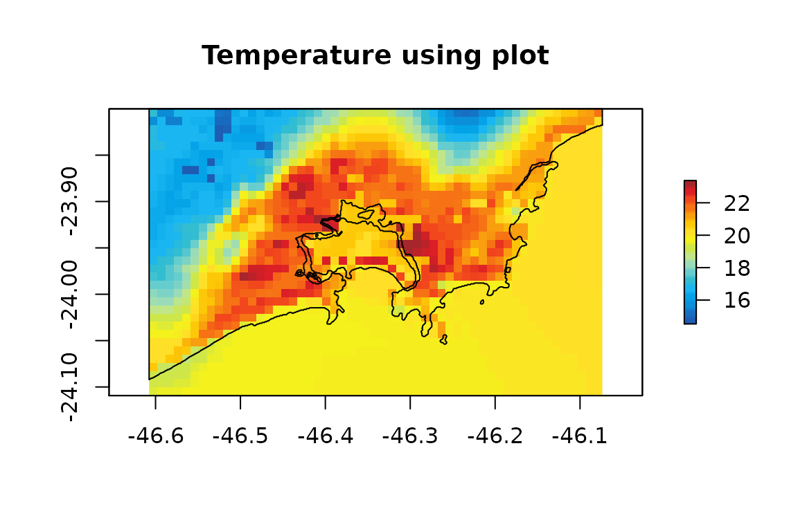
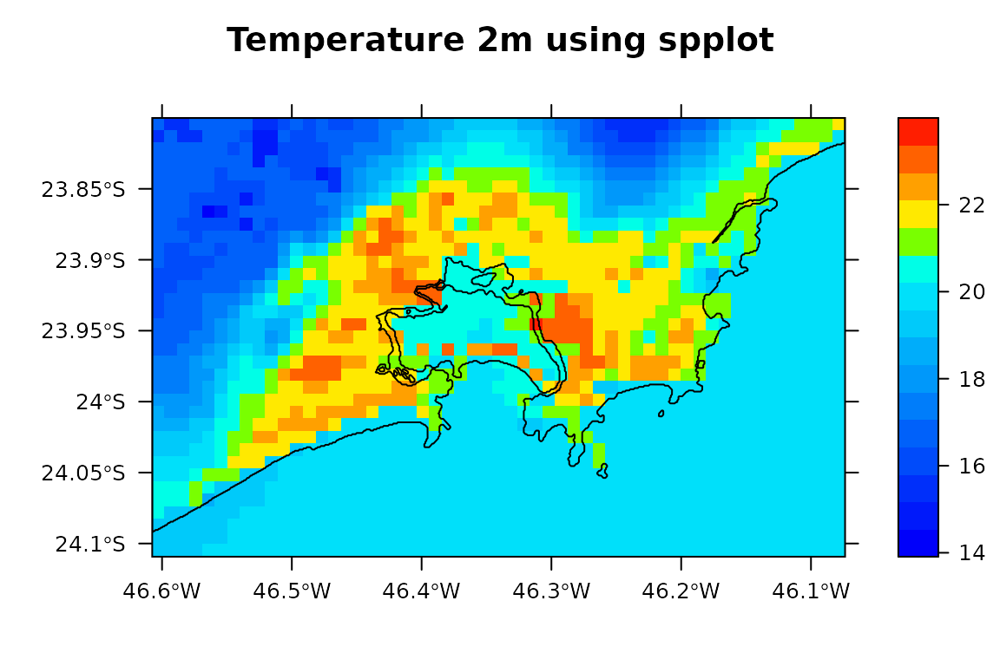

Based on this NCL
library(eixport) library(raster) #> Loading required package: sp library(stars) #> Loading required package: abind #> Loading required package: sf #> Linking to GEOS 3.8.0, GDAL 3.0.4, PROJ 6.3.1 library(cptcity) library(sf)
Reading Temperature
t2 <- wrf_get("/media/sergio/ext4/wrfoETA_COM_VEIN/wrfout_d03_2014-10-03_00:00:00", "T2", as_raster = T) t2 <- t2$T2_2014.10.04_15.00.00 -273.15# we select one
Adding coastlines and cropping for our study area
cl <- st_read("/media/sergio/ext4/coasts_shapefile/gshhg-shp-2.3.7/GSHHS_shp/f/GSHHS_f_L1.shp") #> Reading layer `GSHHS_f_L1' from data source `/media/sergio/ext4/coasts_shapefile/gshhg-shp-2.3.7/GSHHS_shp/f/GSHHS_f_L1.shp' using driver `ESRI Shapefile' #> Simple feature collection with 179837 features and 6 fields #> geometry type: POLYGON #> dimension: XY #> bbox: xmin: -180 ymin: -68.92453 xmax: 180 ymax: 83.63339 #> geographic CRS: WGS 84 cl <- st_cast(st_crop(cl, st_as_stars(t2)), "LINESTRING") #> although coordinates are longitude/latitude, st_intersection assumes that they are planar #> Warning: attribute variables are assumed to be spatially constant throughout all #> geometries #> Warning in st_cast.sf(st_crop(cl, st_as_stars(t2)), "LINESTRING"): repeating #> attributes for all sub-geometries for which they may not be constant
Find colour palette for temperature
find_cpt("temperature") #> [1] "arendal_temperature" "idv_temperature" "jjg_misc_temperature" #> [4] "kst_03_red_temperature"
Based on NCL:
plot(t2, main = "Temperature using plot", col = cpt("arendal_temperature")) plot(cl, add= T, col = "black") #> Warning in plot.sf(cl, add = T, col = "black"): ignoring all but the first #> attribute

spplot(t2, main = "Temperature 2m using spplot", scales=list(draw = TRUE), col.regions = cpt("idv_temperature"), sp.layout = list("sp.lines", as_Spatial(cl), col = "black"))

# st2 <- st_as_stars(t2) # plot(st2, axes = T, main = "Temperature 2m using stars", col = cpt("jjg_misc_temperature"), breaks = "fisher", reset = F) # contour(st2, add = T) # plot(cl$geometry, add= T, col = "black")